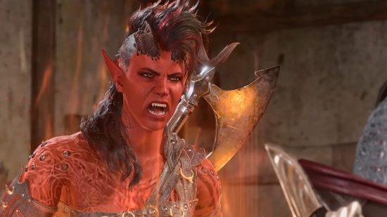
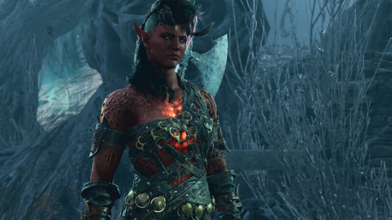

Karlach
- Race: Tiefling
- Class: Barbarian
About
Source: Baldur's Gate III Homepage
Fresh-escaped from Hell, Karlach is finally free of the archdevil Zariel - but not from the infernal engine Zariel planted in her chest. With her first taste of freedom in ten years, Karlach is eager to find a fix for the engine that's burning hotter and hotter before it burns her out completely.
But even more premier in her mind? Exploring, finding like-minded travellers, falling in love, and taking revenge on the man who sold her to Zariel all those years ago.
Gallery

